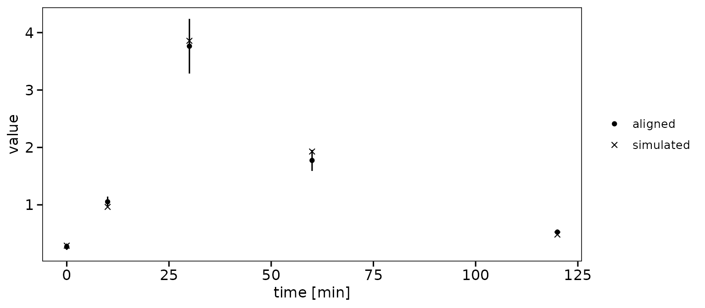
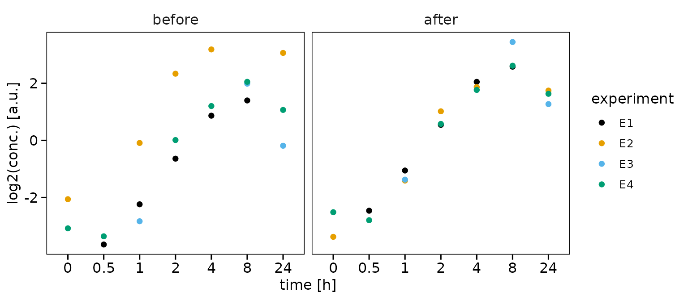
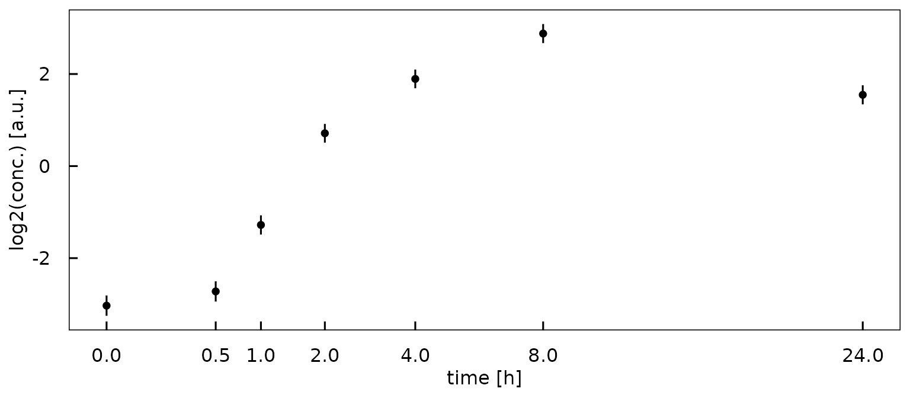
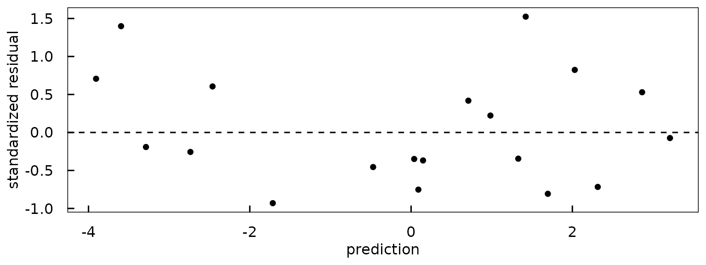
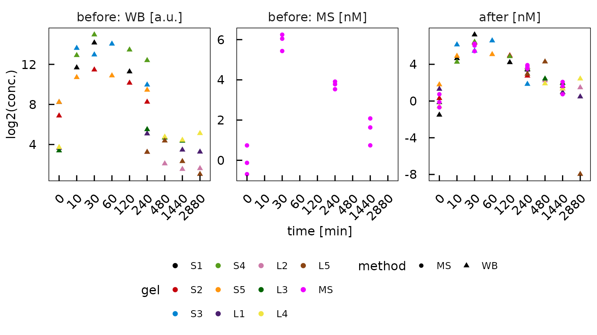
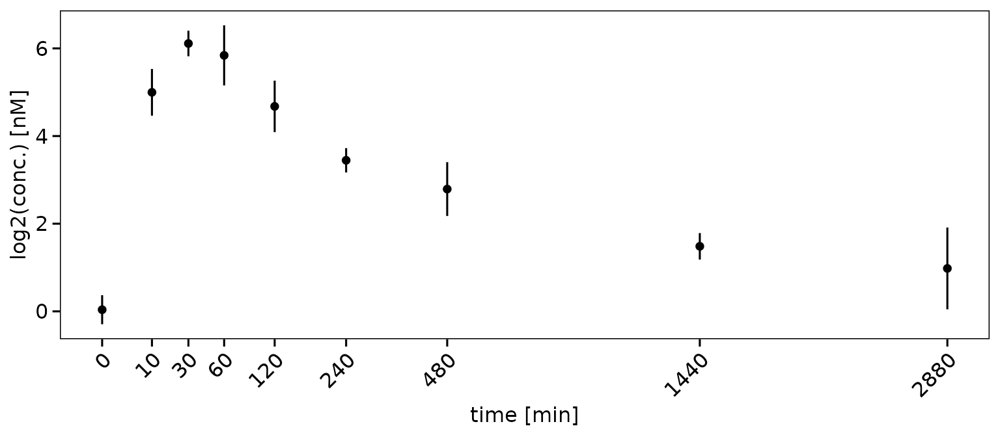
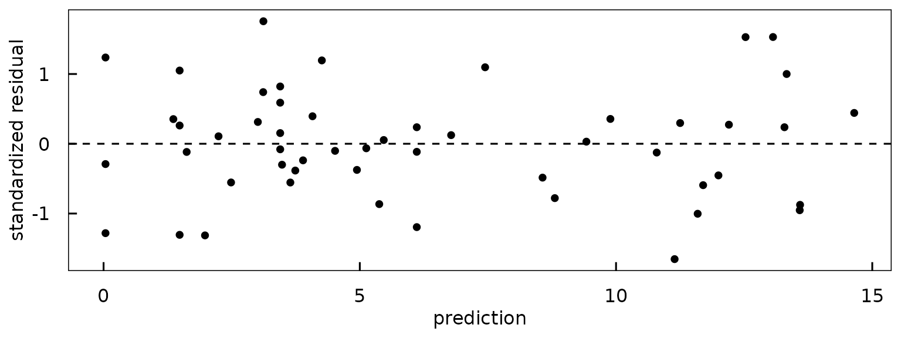
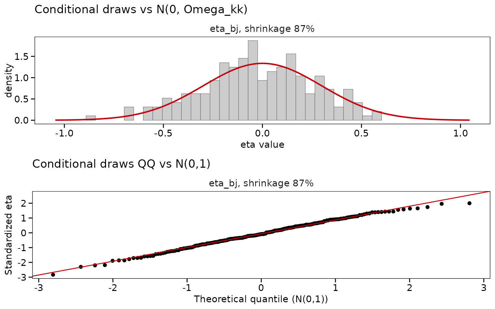
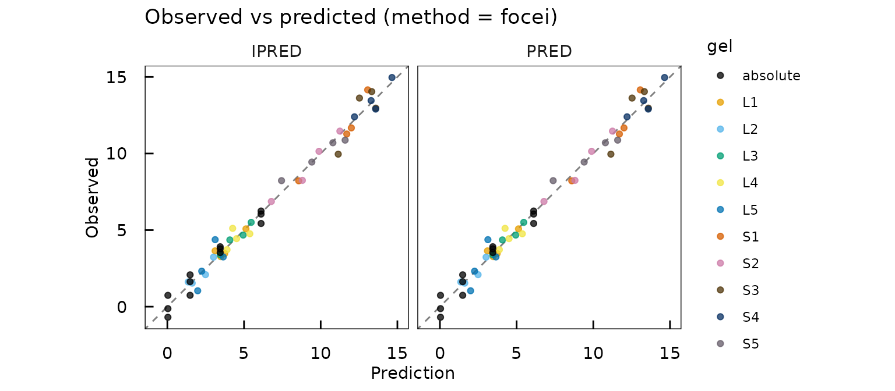

9. Alignment of relative data measurements
Source:vignettes/articles/guide-alignment.Rmd
guide-alignment.RmdWestern blots, plate readers and similar assays read on
experiment-specific scales: exposure and background differ between gels
or plates. alignmentModel() and align() bring
all experiments onto one common scale by maximum likelihood, before or
instead of a dynamic model, with the reading model written as an
expression, as in the R package blotIt.
library(dMod2)
library(ggplot2)
options(dMod2.outdir = file.path(tempdir(), "guide-alignment"))
dir.create(getOption("dMod2.outdir"), showWarnings = FALSE)Simulated blot data
A phosphorylation at five time points after stimulation in six biological replicates, each with own cells, stimulation and lysates on a separate gel, every sample in three lanes (technical replicates). Simulated: 20 % biological variability per sample, exposure and background per gel, 15 % technical noise per lane.
set.seed(1)
times <- c(0, 10, 30, 60, 120)
truth <- c(0.3, 1, 4, 2, 0.5)
gels <- paste0("G", 1:6)
samples <- expand.grid(time = times, gel = gels, stringsAsFactors = FALSE)
samples$level <- truth[match(samples$time, times)] * rlnorm(nrow(samples), 0, 0.2)
scale <- setNames(rlnorm(6, 7, 0.5), gels)
background <- setNames(rlnorm(6, log(100), 0.3), gels)
lane <- rep(seq_len(nrow(samples)), each = 3)
d <- data.frame(samples[lane, c("time", "gel")], lane = 1:3, row.names = NULL)
d$value <- (scale[d$gel] * samples$level[lane] + background[d$gel]) * rlnorm(nrow(d), 0, 0.15)
head(d)
#> time gel lane value
#> 1 0 G1 1 734.2677
#> 2 0 G1 2 718.9765
#> 3 0 G1 3 596.4622
#> 4 10 G1 1 2098.0641
#> 5 10 G1 2 2464.1000
#> 6 10 G1 3 2618.0225Alignment model
A reading is value yi times gel scale sj
plus background bj, with standard deviation proportional to
the prediction. Each symbol is a linear predictor over the data columns,
one formula per role: a value per time point, a scale per gel, one
background and one error parameter. All symbols are on log scale, hence
positive. technical = "lane" replaces the three lanes of a
sample by their mean, see technical and biological
replicates.
logs <- c("yi <- exp(yi)", "sj <- exp(sj)", "bj <- exp(bj)", "sigmaR <- exp(sigmaR)")
m <- alignmentModel(d, model = "yi * sj + bj", errmodel = "sigmaR * prediction",
biological = yi ~ time, scaling = sj ~ gel, error = bj + sigmaR ~ 1, trafo = logs,
technical = "lane")
m
#> alignmentModel: 30 readings, model yi * sj + bj, error sigmaR * prediction
#> yi biological 5 parameters, yi = exp(yi)
#> sj scaling 6 parameters, sj = exp(sj)
#> bj error 1 parameter, bj = exp(bj)
#> sigmaR error 1 parameter, sigmaR = exp(sigmaR)
#> technical replicates over lane: 90 readings, their geometric means
#> mean of yi normalized in 1 block of experimentsDoubling all values and halving all scales changes nothing; the alignment holds the geometric mean of the values at 1 within each block of experiments sharing values.
Fit by restricted likelihood
align() fits from several perturbed starts and keeps the
best. Error parameters are estimated by restricted maximum likelihood by
default, correcting for the degrees of freedom of the prediction
parameters: here 5 values, 6 scales and the background against 30
readings. The print names the likelihood of \(-2 \log L\) and lists the maximum
likelihood fits the restricted one starts from.
fit <- align(m, fits = 4)
fit#> alignment: 30 readings, 5 biological values, 12 parameters
#> restricted likelihood (REML, 2 rounds): -2 log L 443.68, AIC 467.68
#> maximum likelihood fits, REML from the best: -2 log L 402.98 402.98 402.98 402.98Aligned values with standard errors:
fit$aligned
#> time symbol estimate se value sigma
#> 1 0 yi -1.30707047 0.20234907 0.2706117 0.05475802
#> 2 10 yi 0.05228793 0.08559828 1.0536791 0.09019312
#> 3 30 yi 1.32520196 0.12659089 3.7629452 0.47635457
#> 4 60 yi 0.57316985 0.10333915 1.7738811 0.18331136
#> 5 120 yi -0.64358926 0.08604543 0.5254032 0.04520855Comparison with the simulation
On the alignment scale the simulated course is
truth / exp(mean(log(truth))). Error (log ratio of aligned
to simulated) against the standard error se:
simulated <- data.frame(time = times, value = truth / exp(mean(log(truth))))
errors <- function(fit) {
a <- fit$aligned[match(times, fit$aligned$time), ]
data.frame(time = times, simulated = simulated$value, aligned = a$value,
error = log(a$value / simulated$value), se = a$se)
}
signif(errors(fit), 2)
#> time simulated aligned error se
#> 1 0 0.29 0.27 -0.067 0.200
#> 2 10 0.96 1.10 0.089 0.086
#> 3 30 3.90 3.80 -0.025 0.130
#> 4 60 1.90 1.80 -0.084 0.100
#> 5 120 0.48 0.53 0.086 0.086
ggplot(fit$aligned, aes(time, value)) +
geom_errorbar(aes(ymin = value - sigma, ymax = value + sigma), width = 0) +
geom_point(aes(shape = "aligned")) +
geom_point(data = simulated, aes(shape = "simulated")) +
scale_shape_manual(values = c(aligned = 16, simulated = 4), name = NULL) +
labs(x = "time [min]", y = "value") + theme_dMod()
Technical and biological replicates
A biological replicate repeats the experiment (cells, stimulation, lysate) and differs by biological variability and every measurement step. A technical replicate measures the same sample again (lysate in another lane, cDNA in another well) and differs by the measurement steps alone.
The lanes of a sample share the biological deviation of that sample,
so they are not independent readings of the biology.
technical = "lane" averages them before the alignment;
readings agreeing in all columns but value,
lloq and the technical columns form one sample. The mean is
geometric for a relative error model, as here, and arithmetic for an
absolute one, as for readings already on log scale. The error model then
describes the scatter of sample means: biological variability plus
technical noise of a three-lane mean.
The same data with every lane as a separate reading:
mLanes <- alignmentModel(d, model = "yi * sj + bj", errmodel = "sigmaR * prediction",
biological = yi ~ time, scaling = sj ~ gel, error = bj + sigmaR ~ 1,
trafo = logs)
fitLanes <- align(mLanes, fits = 4)
fitLanes#> alignment: 90 readings, 5 biological values, 12 parameters
#> restricted likelihood (REML, 2 rounds): -2 log L 1293.87, AIC 1317.87
#> maximum likelihood fits, REML from the best: -2 log L 1243.44 1243.44 1243.44 1243.44
signif(errors(fitLanes), 2)
#> time simulated aligned error se
#> 1 0 0.29 0.27 -0.051 0.120
#> 2 10 0.96 1.10 0.086 0.050
#> 3 30 3.90 3.70 -0.040 0.074
#> 4 60 1.90 1.80 -0.084 0.060
#> 5 120 0.48 0.53 0.089 0.050Both fits find nearly the same values and errors, but the lane fit reports standard errors smaller by about \(\sqrt{3}\): it counts 90 readings, while most of the error is the biological deviation of 30 samples. Its errors reach 1.8 standard errors, those of the fit of means stay within two.
Random background per gel
Instead of six free backgrounds, the background can be a random
effect per gel around a common value. The role then takes a list of
formulas; the fit integrates the random effects by FOCEI as in Nonlinear mixed-effects models, with their
standard deviation by restricted likelihood. Five readings per gel say
little about it, so a prior holds the standard deviation of the log
background near 0.3: log omega_bj_bj normal around \(\log 0.3\), standard deviation 0.3.
m2 <- alignmentModel(d, model = "yi * sj + bj", errmodel = "sigmaR * prediction",
biological = yi ~ time, scaling = list(sj ~ gel, bj ~ 1 + (1 | gel)),
error = sigmaR ~ 1, trafo = logs, technical = "lane",
prior = constraintL2(mu = c(omega_bj_bj = log(0.3)), sigma = 0.3))
fit2 <- align(m2, fits = 4)
fit2#> alignment: 30 readings, 5 biological values, 13 parameters
#> restricted likelihood (REML, 5 rounds): -2 log L 443.86, AIC 469.86
#> maximum likelihood fits, REML from the best: -2 log L 402.18 402.18 402.18 535.83
#> standard errors from the Gauss-Newton information, the Hessian of the marginal is not positive definite
signif(errors(fit2), 2)
#> time simulated aligned error se
#> 1 0 0.29 0.30 0.037 0.180
#> 2 10 0.96 1.00 0.066 0.080
#> 3 30 3.90 3.50 -0.084 0.120
#> 4 60 1.90 1.70 -0.120 0.098
#> 5 120 0.48 0.53 0.100 0.084Background per gel, common value times the random effect at the mode, against the simulation:
bg <- exp(fit2$parameters[["bj"]] + fit2$random$mode[match(gels, fit2$random$group)])
data.frame(gel = gels, simulated = round(background), common = round(exp(fit$parameters[["bj"]])),
random = round(bg))
#> gel simulated common random
#> G1 G1 89 113 58
#> G2 G2 98 113 56
#> G3 G3 139 113 66
#> G4 G4 126 113 57
#> G5 G5 95 113 61
#> G6 G6 93 113 62Both fits have nearly the same likelihood; values change by less than their standard errors. The random backgrounds lie below the simulated ones with little spread, since the bands lie far above the background. In the Western blots below, gels with weak lanes resolve it.
Fit options
| argument | default | controls |
|---|---|---|
fits |
10 |
fits from perturbed starts |
sd |
0.5 |
standard deviation of the perturbation |
reml |
TRUE |
error parameters and random-effect spreads by restricted likelihood |
method |
"focei" |
with random terms, "focei" or
"quadrature"
|
cores |
1 |
fits in parallel |
The alignment objective needs no ODE solver and is exact up to rounding, so fits stop at tolerances near the square root of machine precision, about \(10^{-8}\), for value change, predicted decrease and gradient.
Absolute readings, such as targeted mass spectrometry concentrations,
are marked in a column absolute and fix the scale of their
block. The two sections below treat qPCR with wells below the detection
limit, and Western blots with random background per gel plus mass
spectrometry in nM.
qPCR with censored wells
Target mRNA at seven time points after stimulation in four experiments (biological replicates), each with own cells, cDNA, plate and a subset of time points, none shared by all; every sample in two wells (technical duplicates). A well reports the cycle Ct at which fluorescence crosses a threshold above background during exponential growth. The amount doubles per cycle, so 36 - Ct is the log2 concentration in arbitrary units, shifted by an experiment offset. Untreated cells barely express the target: a well not crossing the threshold in 40 cycles reports no Ct, and the reading lies below 36 - 40 = -4.
qPCR data
Column lloq holds the limit of each reading; an
NA reading is censored there. Samples scatter around their
experiment course by 0.5 cycles (standard deviation), wells of a sample
by 0.25.
set.seed(5)
times <- c(0, 0.5, 1, 2, 4, 8, 24)
log2fold <- c(0, 0.3, 1.6, 3.6, 5.2, 5.6, 4.4)
runs <- list(E1 = times[1:6], E2 = times[c(1, 3:5, 7)], E3 = times[c(2, 3, 6, 7)], E4 = times[c(1, 2, 4:7)])
samples <- do.call(rbind, lapply(names(runs), function(e) data.frame(experiment = e, time = runs[[e]])))
offset <- setNames(rnorm(length(runs)), names(runs))
samples$ct <- 39.3 - log2fold[match(samples$time, times)] - offset[samples$experiment] +
rnorm(nrow(samples), 0, 0.5)
well <- rep(seq_len(nrow(samples)), each = 2)
qpcr <- data.frame(samples[well, c("experiment", "time")], well = 1:2, row.names = NULL)
ct <- samples$ct[well] + rnorm(nrow(qpcr), 0, 0.25)
qpcr$value <- ifelse(ct < 40, 36 - ct, NA)
qpcr$lloq <- -4
head(qpcr)
#> experiment time well value lloq
#> 1 E1 0.0 1 NA -4
#> 2 E1 0.0 2 NA -4
#> 3 E1 0.5 1 -3.914095 -4
#> 4 E1 0.5 2 -3.375131 -4
#> 5 E1 1.0 1 -2.091573 -4
#> 6 E1 1.0 2 -2.383751 -4
sum(is.na(qpcr$value))
#> [1] 4qPCR model
A reading is yi + sj, log2 concentration per time point
plus experiment offset, with absolute error.
technical = "well" averages the wells arithmetically, since
readings are already log2. A sample with one well below the limit is
censored at the mean of the other well and the limit.
m <- alignmentModel(qpcr, model = "yi + sj", errmodel = "sigma",
biological = yi ~ time,
scaling = sj ~ experiment,
error = sigma ~ 1,
trafo = "sigma <- exp(sigma)", technical = "well")
m
#> alignmentModel: 21 readings, model yi + sj, error sigma
#> yi biological 7 parameters
#> sj scaling 4 parameters
#> sigma error 1 parameter, sigma = exp(sigma)
#> technical replicates over well: 42 readings, their arithmetic means
#> 2 readings censored at their lloq
#> mean of yi normalized in 1 block of experimentsqPCR fit
The mean of the values is held at 0; differences to the untreated value are log2 fold changes.
fit <- align(m, fits = 1)
fit#> alignment: 21 readings, 7 biological values, 11 parameters
#> restricted likelihood (REML, 3 rounds): -2 log L 31.96, AIC 53.96
#> maximum likelihood fit, the start of REML: -2 log L 4.08
a <- fit$aligned
a$log2fc <- a$estimate - a$estimate[a$time == 0]
cbind(a[c("time", "estimate", "se", "log2fc")], simulated = log2fold[match(a$time, times)])
#> time estimate se log2fc simulated
#> 1 0.0 -3.0318756 0.2207319 0.0000000 0.0
#> 2 0.5 -2.7228982 0.2198579 0.3089774 0.3
#> 3 1.0 -1.2785138 0.2080716 1.7533617 1.6
#> 4 2.0 0.7126685 0.2030375 3.7445441 3.6
#> 5 4.0 1.8934505 0.2030375 4.9253261 5.2
#> 6 8.0 2.8791506 0.2068818 5.9110262 5.6
#> 7 24.0 1.5480179 0.2072289 4.5798935 4.4Duplicate means per experiment before and after alignment; censored samples enter by the limit and are not drawn.
s <- fit$scaled[!fit$scaled$bloq, ]
both <- rbind(data.frame(s[c("experiment", "time")], stage = "before", value = s$value),
data.frame(s[c("experiment", "time")], stage = "after", value = s$scaled))
both$stage <- factor(both$stage, c("before", "after"))
ggplot(both, aes(factor(time), value, color = experiment)) +
geom_point() + facet_wrap(~ stage) +
labs(x = "time [h]", y = "log2(conc.) [a.u.]", color = "experiment") +
scale_color_dMod() + theme_dMod()
plotAligned(fit) + scale_x_sqrt(breaks = times) + labs(x = "time [h]", y = "log2(conc.) [a.u.]")
plotResiduals(fit)
Aligned values as data
as.datalist(fit)
#> C1:
#> name time value sigma lloq
#> 1 yi 0.0 -3.0318756 0.2207319 -Inf
#> 2 yi 0.5 -2.7228982 0.2198579 -Inf
#> 3 yi 1.0 -1.2785138 0.2080716 -Inf
#> 4 yi 2.0 0.7126685 0.2030375 -Inf
#> 5 yi 4.0 1.8934505 0.2030375 -Inf
#> 6 yi 8.0 2.8791506 0.2068818 -Inf
#> 7 yi 24.0 1.5480179 0.2072289 -InfWestern blot and targeted mass spectrometry
A phosphoprotein after ligand stimulation, quantified on ten gels and
by targeted mass spectrometry. Five gels hold a short course up to 4 h,
five a long one up to 48 h, sharing only the untreated lane and 4 h.
Each gel holds four time points of one course on a separate scale, the
long gels far lower. Each gel adds a background (the membrane signal
around the bands), scaled with the bands by the image; it shows on weak
lanes, untreated and late, and hides under the others. With a background
per gel, untreated level and typical background are told apart only by
the variation between gels: a normal random effect per gel. Mass
spectrometry measures nM at four time points of both courses, three
samples each. These readings are marked in column absolute,
predicted by the expression absolute (by default the first
biological symbol), depend on no scaling parameter and have gel
NA; their block is not normalized but comes out in nM.
Blot and mass spectrometry data
One row per reading: log2 of the band in arbitrary units or of the concentration in nM. Short course gels S1 to S5, long course L1 to L5.
set.seed(6)
short <- c(0, 10, 30, 60, 120, 240)
long <- c(0, 240, 480, 1440, 2880)
times <- sort(union(short, long))
conc <- c(1, 40, 85, 60, 25, 10, 6, 3, 2)
gels <- c(sprintf("S%d", 1:5), sprintf("L%d", 1:5))
course <- setNames(rep(c("short", "long"), each = 5), gels)
shift <- setNames(ifelse(course == "short", 6, 1) + rnorm(10, 0, 1.5), gels)
background <- setNames(1.5 + rnorm(10, 0, 0.3), gels)
wb <- do.call(rbind, lapply(gels, function(g)
data.frame(method = "WB", gel = g, time = sort(sample(if (course[[g]] == "short") short else long, 4)))))
wb$value <- log2(conc[match(wb$time, times)] + 2^background[wb$gel]) + shift[wb$gel] +
rnorm(nrow(wb), 0, 0.7)
ms <- data.frame(method = "MS", gel = NA, time = rep(c(0, 30, 240, 1440), each = 3))
ms$value <- log2(conc[match(ms$time, times)]) + rnorm(nrow(ms), 0, 0.5)
wbms <- rbind(cbind(wb, absolute = FALSE), cbind(ms, absolute = TRUE))
head(wbms)
#> method gel time value absolute
#> 1 WB S1 0 8.219017 FALSE
#> 2 WB S1 10 11.673758 FALSE
#> 3 WB S1 30 14.158178 FALSE
#> 4 WB S1 120 11.274899 FALSE
#> 5 WB S2 0 6.870860 FALSE
#> 6 WB S2 30 11.463610 FALSEBlot and mass spectrometry model
A band reads log2(2^yi + 2^(b + bj)) + sj: log2
concentration yi in nM per time point plus background,
shifted by sj per gel. The log2 background is the common
fixed b plus bj, a normal random effect around
0 per gel. A mass spectrometry reading is yi. Errors are
absolute, one per method. The data say little about the background
(small spread, hidden by bands), so a prior holds the standard deviation
of bj near 0.3 (log omega_bj_bj normal around
\(\log 0.3\), standard deviation 0.3),
and a weak prior puts b around 1 nM (normal around 0,
standard deviation 2).
m <- alignmentModel(wbms, model = "log2(2^yi + 2^(b + bj)) + sj", errmodel = "sigma",
biological = yi ~ time,
scaling = list(sj ~ gel, b ~ 1, bj ~ 0 + (1 | gel)),
error = sigma ~ method,
trafo = "sigma <- exp(sigma)",
prior = constraintL2(mu = c(omega_bj_bj = log(0.3), b = 0),
sigma = c(omega_bj_bj = 0.3, b = 2)))
m
#> alignmentModel: 52 readings, model log2(2^yi + 2^(b + bj)) + sj, error sigma
#> yi biological 9 parameters
#> sj scaling 10 parameters
#> b scaling 1 parameter
#> bj scaling 0 parameters, random over gel
#> sigma error 2 parameters, sigma = exp(sigma)
#> prior on omega_bj_bj, b
#> 12 absolute readings, model yi: 1 of 1 block on their scaleBlot and mass spectrometry fit
Values come out as log2 concentrations in nM, also at time points without mass spectrometry:
fit <- align(m, fits = 1)
fit#> alignment: 52 readings, 9 biological values, 23 parameters
#> restricted likelihood (REML, 3 rounds): -2 log L 87.55, AIC 133.55
#> maximum likelihood fit, the start of REML: -2 log L 83.41
a <- fit$aligned[order(fit$aligned$time), ]
cbind(a[c("time", "estimate", "se")], nM = round(2^a$estimate, 1), simulated = conc[match(a$time, times)])
#> time estimate se nM simulated
#> 1 0 0.0376694 0.3314669 1.0 1
#> 2 10 4.9974367 0.5324013 31.9 40
#> 3 30 6.1116212 0.2913086 69.1 85
#> 6 60 5.8406229 0.6858245 57.3 60
#> 4 120 4.6766044 0.5870124 25.6 25
#> 5 240 3.4463781 0.2776347 10.9 10
#> 9 480 2.7898484 0.6140610 6.9 6
#> 7 1440 1.4840426 0.3025079 2.8 3
#> 8 2880 0.9797516 0.9334751 2.0 2Background in nM and standard deviations of both methods on log2 scale:
p <- fit$parameters
round(2^p[["b"]], 2)
#> [1] 2.2
c(MS = exp(p[["sigma"]]), WB = exp(p[["sigma"]] + p[["sigma_methodWB"]]))
#> MS WB
#> 0.5679049 0.7157826Readings per gel and of mass spectrometry before (bands in arbitrary units, mass spectrometry in nM) and after alignment (all in nM); absolute readings stay unchanged:
s <- fit$scaled
s$gel <- factor(ifelse(s$absolute, "MS", s$gel), c(gels, "MS"))
panel <- c("before: WB [a.u.]", "before: MS [nM]", "after [nM]")
both <- rbind(data.frame(s[c("gel", "method", "time")], reading = s$value,
panel = ifelse(s$absolute, panel[2], panel[1])),
data.frame(s[c("gel", "method", "time")], reading = s$scaled, panel = panel[3]))
both$panel <- factor(both$panel, panel)
ggplot(both[is.finite(both$reading), ], aes(factor(time), reading, color = gel, shape = method)) +
geom_point() + facet_wrap(~ panel, scales = "free_y") +
guides(x = guide_axis(angle = 45)) +
labs(x = "time [min]", y = "log2(conc.)", color = "gel", shape = "method") +
scale_color_dMod(palette = "dMod") + theme_dMod() + theme(legend.position = "bottom")
plotAligned(fit) + scale_x_sqrt(breaks = times) + guides(x = guide_axis(angle = 45)) +
labs(x = "time [min]", y = "log2(conc.) [nM]")
plotResiduals(fit)
Random background
Standard deviation of the log2 background between gels, and per gel the mode with conditional standard error. The standard deviation lies near the prior mean, so it comes mostly from the prior.
fit$omega
#> type eta1 eta2 estimate se
#> row sd bj bj 0.2988148 0.08553806
fit$random
#> group eta parameter mode se
#> 1 S1 bj eta_bj_S1 -0.044369073 0.2873683
#> 2 S2 bj eta_bj_S2 -0.001118166 0.2865965
#> 3 S3 bj eta_bj_S3 -0.020851705 0.2979396
#> 4 S4 bj eta_bj_S4 0.002113228 0.2977890
#> 5 S5 bj eta_bj_S5 0.089740487 0.2861226
#> 6 L1 bj eta_bj_L1 0.020769453 0.2762448
#> 7 L2 bj eta_bj_L2 0.006686826 0.2852103
#> 8 L3 bj eta_bj_L3 0.004758834 0.2810873
#> 9 L4 bj eta_bj_L4 0.026913625 0.2755418
#> 10 L5 bj eta_bj_L5 -0.039047130 0.2856489The shrinkage \(1 -
\operatorname{SD}(\text{modes}) / \omega\) measures how much the
data know about the random effect of one gel; where bands hide the
background, the mode stays near 0. Aligned values, b and
\(\omega\) integrate over the random
effects and do not depend on the modes; a mode is no measurement of the
gel background, and plots of modes look too narrow.
fit$fit$shrinkage
#> eta_bj
#> 0.8728Conditional draws of the random effects against the estimated normal, which they follow whatever the shrinkage. At high shrinkage the draws mostly repeat that normal, so the plot could hardly reveal a background distributed otherwise.
plotRandomEffects(fit$fit)
Readings against the individual prediction (IPRED, random effects at the modes) and the population prediction (PRED, every gel at the population background):

Reference: alignmentModel(), align(),
plotAligned(), plotResiduals(),
plotRandomEffects()